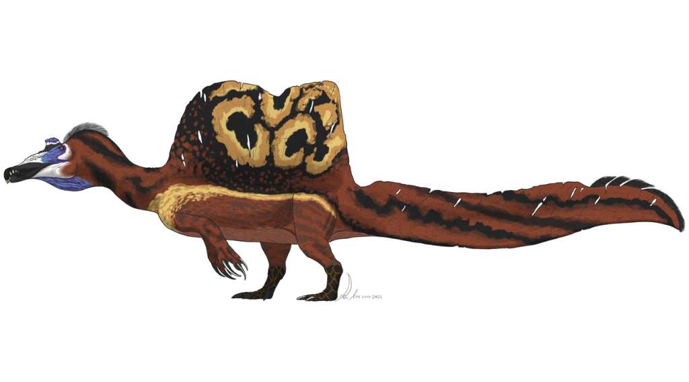
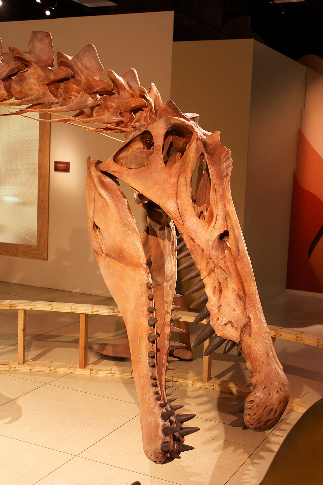

Spinosaurus
Spinosaurus (gr. «lagarto de espinas») es un género de dinosaurios terópodos espinosáuridos grandes que vivieron en lo que ahora es el norte de África durante el Cenomaniano del período Cretácico Superior, hace unos 100 a 94 millones de años, en lo que hoy es Egipto, Marruecos y Níger. Actualmente se conocen dos especies válidas: S. aegyptiacus (la especie tipo) y S. mirabilis.
El género se conoció por primera vez a partir de restos egipcios descubiertos en 1912 y descritos por el paleontólogo alemán Ernst Stromer en 1915. Los restos originales fueron destruidos en la Segunda Guerra Mundial , pero salió a la luz material adicional a principios del siglo XXI. No está claro si una o dos especies están representadas en los fósiles reportados en la literatura científica. La especie tipo , S. aegyptiacus, se conoce principalmente de la Formación Bahariya en Egipto y los lechos de Kem Kem en Marruecos. La otra especie, S. mirabilis, se conoce de la Formación Farak en Níger. Se ha recuperado otra especie potencial, S. maroccanus, de los yacimientos de Kem Kem, es probable que esta especie dudosa sea un sinónimo más moderno de S. aegyptiacus. Otros posibles sinónimos más modernos incluyen Sigilmassasaurus de los yacimientos de Kem Kem y Oxalaia de la Formación Alcântara en Brasil, aunque otros investigadores proponen que ambos géneros son taxones distintos.
Spinosaurus es uno de los carnívoros terrestres más grandes conocidos ; otros grandes carnívoros comparables a Spinosaurus incluyen terópodos como Tyrannosaurus, Giganotosaurus y el contemporáneo Carcharodontosaurus. Un estudio de 2022 sugiere que S. aegyptiacus podría haber alcanzado los 14 m (46 pies) de longitud y 7,4 t (8,2 toneladas cortas) de masa corporal. El cráneo de Spinosaurus era largo, bajo y estrecho, similar al de un cocodrilo moderno , y tenía dientes cónicos rectos con pocas o ninguna serración . Habría tenido extremidades anteriores grandes y robustas con manos de tres dedos, con una garra agrandada en el primer dígito . Las distintivas espinas neurales de Spinosaurus , que eran largas extensiones de las vértebras , crecieron hasta al menos 1,65 m (5,4 pies) de largo y es probable que tuvieran piel que las conectaba, formando una estructura similar a una vela . Los huesos de la cadera del Spinosaurus eran reducidos y las patas eran muy cortas en proporción al cuerpo. Su cola, larga y estrecha, estaba reforzada por espinas neurales altas y delgadas y chevrones alargados , formando una estructura similar a una paleta.
Se sabe que Spinosaurus se alimentaba tanto de presas acuáticas como terrestres. La evidencia sugiere que era semiacuático , aunque el alcance de su capacidad natatoria ha sido muy cuestionado. Los huesos de las patas del Spinosaurus presentaban una alta densidad ósea, lo que le permitía un mejor control de la flotabilidad . Se han propuesto múltiples funciones para la vela dorsal, incluyendo la termorregulación y la exhibición , ya sea para intimidar a sus rivales o para atraer parejas. Vivía en un entorno húmedo de marismas y manglares junto a muchos otros dinosaurios, así como peces, crocodilomorfos, escamosos, tortugas, pterosaurios y plesiosaurios.
Spinosaurus
Rango temporal: Cretácico Superior
Hace 100 - 94 millones de años

Taxonomía
- Reino: Animalia
- Filo: Chordata
- Clase: Sauropsida
- Orden: Saurischia
- Suborden: Theropoda
- (sin rango): Tetanurae
- Infraorden: Sauropoda
- Superfamilia: Megalosauridea
- Familia: Spinosauridae
- Subfamilia: Spinosaurinae
- Tribu: Spinosaurini
- Género: Spinosaurus
Especie tipo
Spinosaurus aegyptiacus
Stromer, 1915
Otras especies
Spinosaurus mirabilis
Sereno et al., 2026
Sinonimia
- Spinosaurus maroccanus
- Sigilmassasaurus brevicollis
- ?Oxalaia quilombensis
Descubrimiento y denominación
Hallazgos similares

El primer descubrimiento de Spinosaurus pudo haber ocurrido en octubre de 1898, cuando el geólogo francés Fernand Foureau desenterró dos dientes inusuales en sedimentos del Cenomaniense de la escarpa de Djoua, en lo que hoy es el sur de Argelia, entonces Argelia francesa. Foureau encontró los especímenes durante la Expedición Foureau-Lamy de 1898-1900, que viajó a través del Sáhara desde Argelia hasta el lago Chad. En 1905, el geólogo francés Émile Haug describió los fósiles desenterrados durante la expedición, incluyendo los dos dientes que asignó al pez Saurocephalus. Sin embargo, en 1915, el paleontólogo alemán y descriptor de Spinosaurus, Ernst Stromer, reasignó los dientes a Spinosaurus. Estudios posteriores han coincidido con esta evaluación, sin embargo, los dientes se han perdido desde entonces.